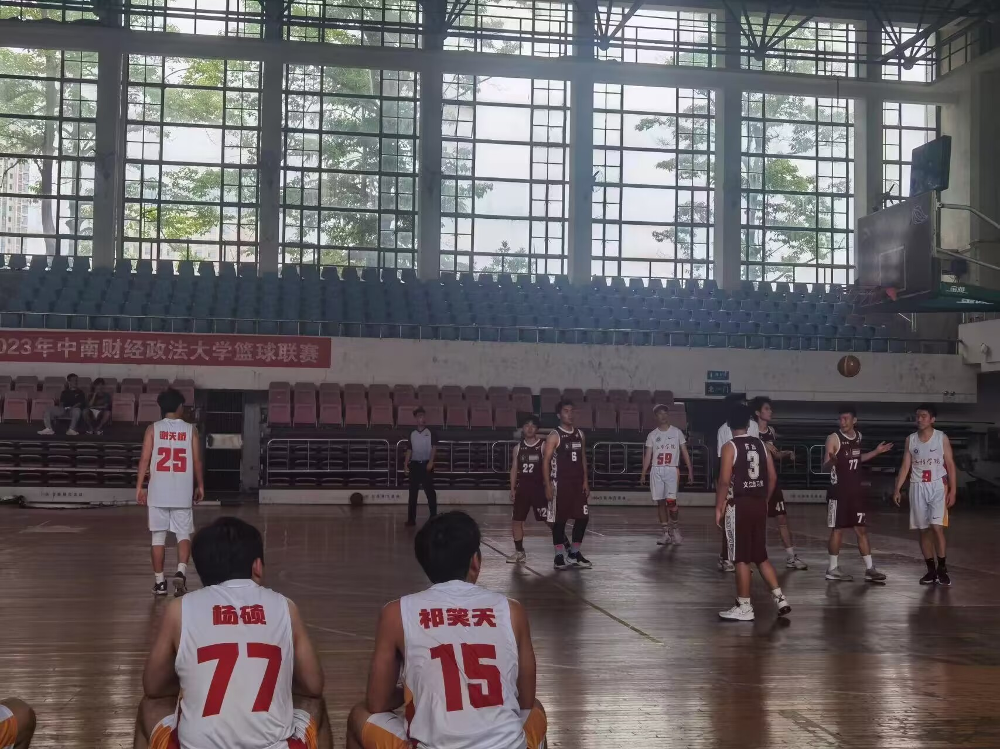
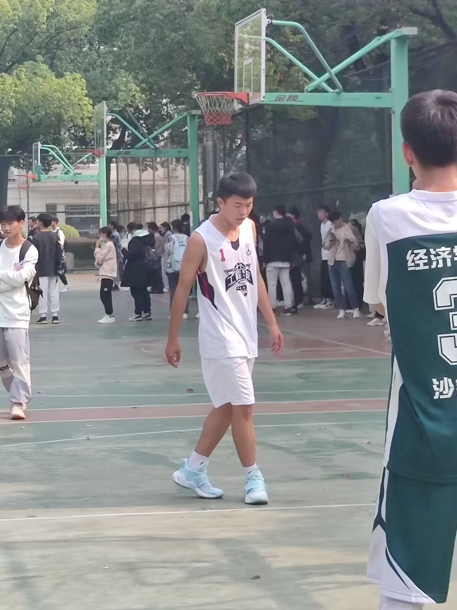
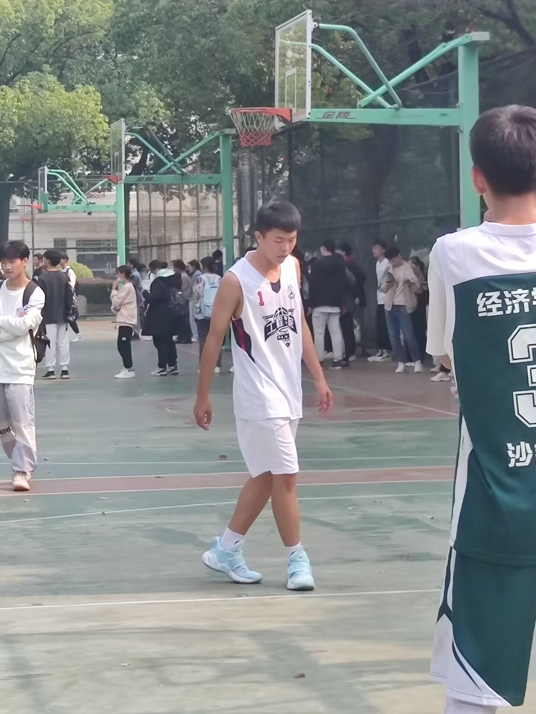
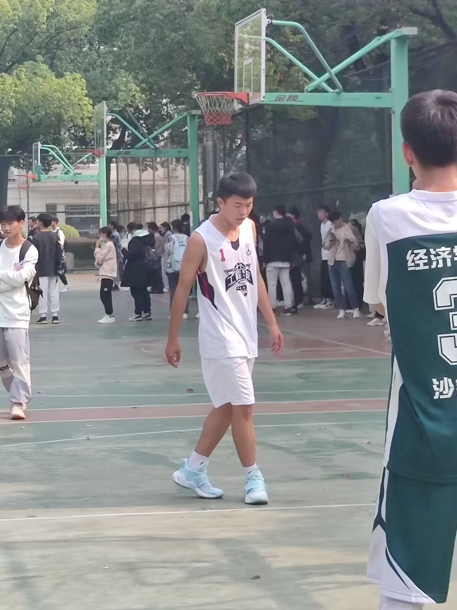
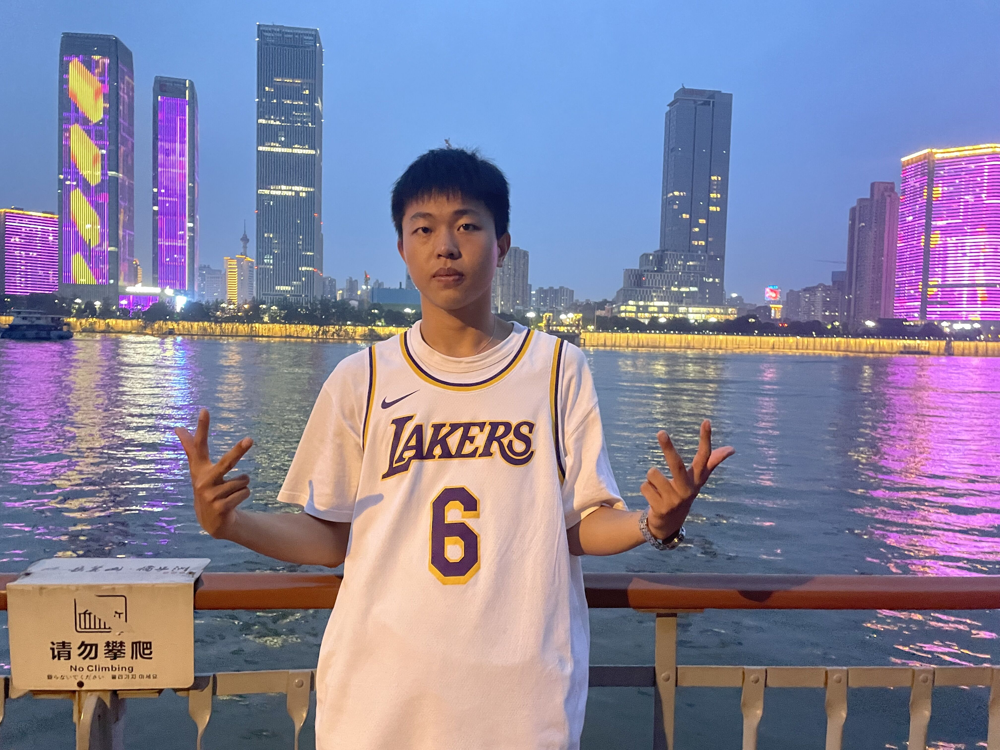

篮球

 


闲暇之余打比赛以及野球
我很喜欢运动，总是和志同道合的朋友一起去打球，大汗淋漓让我感觉很放松
摄影
在我有时间并且发现了美景的时候我总会记录下来
我对风景照片很感兴趣。但是我没有相机，所以我使用手机进行摄影，但是它（iphone12）仍然有卓越的画质
旅行

我热爱探索新的地方和文化，利用假期和闲暇时间旅游
很有幸能够去不同的地方旅游，目前我已经去了很多地方：长沙、武汉、都匀、重庆、梵净山等等，未来还会去更多的地方
我很喜欢一句话“答案都在路上，自由都在风里”